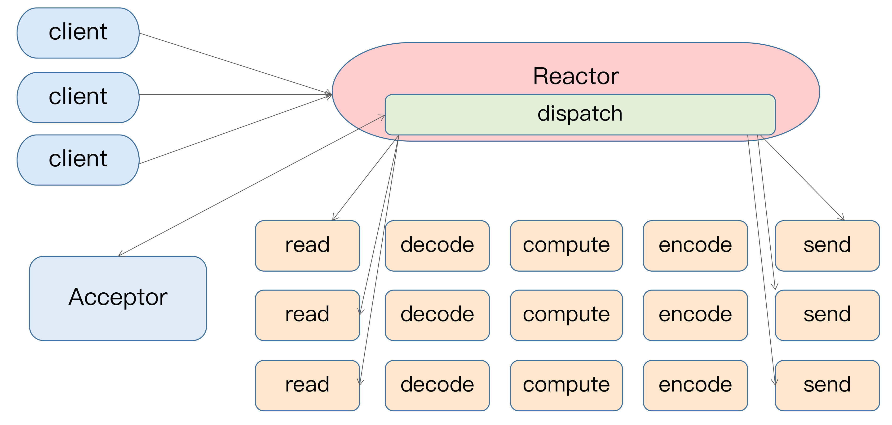
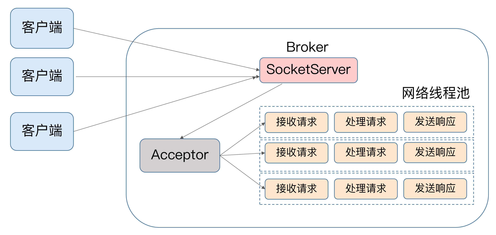
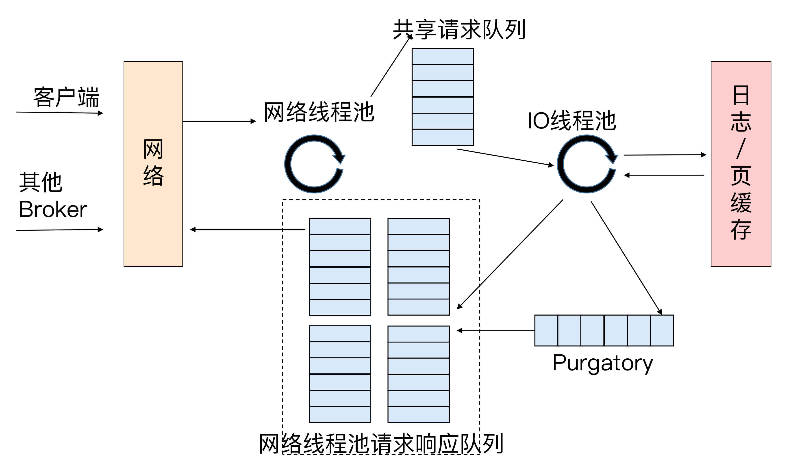

- 00 开篇词 为什么要学习Kafka？.md
- 01 消息引擎系统ABC.md
- 02 一篇文章带你快速搞定Kafka术语.md
- 03 Kafka只是消息引擎系统吗？.md
- 04 我应该选择哪种Kafka？.md
- 05 聊聊Kafka的版本号.md
- 06 Kafka线上集群部署方案怎么做？.md
- 07 最最最重要的集群参数配置（上）.md
- 08 最最最重要的集群参数配置（下）.md
- 09 生产者消息分区机制原理剖析.md
- 10 生产者压缩算法面面观.md
- 11 无消息丢失配置怎么实现？.md
- 12 客户端都有哪些不常见但是很高级的功能？.md
- 13 Java生产者是如何管理TCP连接的？.md
- 14 幂等生产者和事务生产者是一回事吗？.md
- 15 消费者组到底是什么？.md
- 16 揭开神秘的“位移主题”面纱.md
- 17 消费者组重平衡能避免吗？.md
- 18 Kafka中位移提交那些事儿.md
- 19 CommitFailedException异常怎么处理？.md
- 20 多线程开发消费者实例.md
- 21 Java 消费者是如何管理TCP连接的_.md
- 22 消费者组消费进度监控都怎么实现？.md
- 23 Kafka副本机制详解.md
- 24 请求是怎么被处理的？.md
- 25 消费者组重平衡全流程解析.md
- 26 你一定不能错过的Kafka控制器.md
- 27 关于高水位和Leader Epoch的讨论.md
- 28 主题管理知多少_.md
- 29 Kafka动态配置了解下？.md
- 30 怎么重设消费者组位移？.md
- 31 常见工具脚本大汇总.md
- 32 KafkaAdminClient：Kafka的运维利器.md
- 33 Kafka认证机制用哪家？.md
- 34 云环境下的授权该怎么做？.md
- 35 跨集群备份解决方案MirrorMaker.md
- 36 你应该怎么监控Kafka？.md
- 37 主流的Kafka监控框架.md
- 38 调优Kafka，你做到了吗？.md
- 39 从0搭建基于Kafka的企业级实时日志流处理平台.md
- 40 Kafka Streams与其他流处理平台的差异在哪里？.md
- 41 Kafka Streams DSL开发实例.md
- 42 Kafka Streams在金融领域的应用.md
- 加餐 搭建开发环境、阅读源码方法、经典学习资料大揭秘.md
- 用户故事 黄云：行百里者半九十.md
- 结束语 以梦为马，莫负韶华！.md
24 请求是怎么被处理的？
你好，我是胡夕。今天我要和你分享的主题是：Kafka请求是怎么被处理的。
无论是Kafka客户端还是Broker端，它们之间的交互都是通过“请求/响应”的方式完成的。比如，客户端会通过网络发送消息生产请求给Broker，而Broker处理完成后，会发送对应的响应给到客户端。
Apache Kafka自己定义了一组请求协议，用于实现各种各样的交互操作。比如常见的PRODUCE请求是用于生产消息的，FETCH请求是用于消费消息的，METADATA请求是用于请求Kafka集群元数据信息的。
总之，Kafka定义了很多类似的请求格式。我数了一下，截止到目前最新的2.3版本，Kafka共定义了多达45种请求格式。所有的请求都是通过TCP网络以Socket的方式进行通讯的。
今天，我们就来详细讨论一下Kafka Broker端处理请求的全流程。
处理请求的2种常见方案
关于如何处理请求，我们很容易想到的方案有两个。
1.顺序处理请求。如果写成伪代码，大概是这个样子：
while (true) {
Request request = accept(connection);
handle(request);
}
这个方法实现简单，但是有个致命的缺陷，那就是吞吐量太差。由于只能顺序处理每个请求，因此，每个请求都必须等待前一个请求处理完毕才能得到处理。这种方式只适用于请求发送非常不频繁的系统。
2.每个请求使用单独线程处理。也就是说，我们为每个入站请求都创建一个新的线程来异步处理。我们一起来看看这个方案的伪代码。
while (true) {
Request = request = accept(connection);
Thread thread = new Thread(() -> {
handle(request);});
thread.start();
}
这个方法反其道而行之，完全采用异步的方式。系统会为每个入站请求都创建单独的线程来处理。这个方法的好处是，它是完全异步的，每个请求的处理都不会阻塞下一个请求。但缺陷也同样明显。为每个请求都创建线程的做法开销极大，在某些场景下甚至会压垮整个服务。还是那句话，这个方法只适用于请求发送频率很低的业务场景。
既然这两种方案都不好，那么，Kafka是如何处理请求的呢？用一句话概括就是，Kafka使用的是Reactor模式。
Kafka是如何处理请求的？
谈到Reactor模式，大神Doug Lea的“Scalable IO in Java”应该算是最好的入门教材了。即使你没听说过Doug Lea，那你应该也用过ConcurrentHashMap吧？这个类就是这位大神写的。其实，整个java.util.concurrent包都是他的杰作！
好了，我们说回Reactor模式。简单来说，Reactor模式是事件驱动架构的一种实现方式，特别适合应用于处理多个客户端并发向服务器端发送请求的场景。我借用Doug Lea的一页PPT来说明一下Reactor的架构，并借此引出Kafka的请求处理模型。
Reactor模式的架构如下图所示：

从这张图中，我们可以发现，多个客户端会发送请求给到Reactor。Reactor有个请求分发线程Dispatcher，也就是图中的Acceptor，它会将不同的请求下发到多个工作线程中处理。
在这个架构中，Acceptor线程只是用于请求分发，不涉及具体的逻辑处理，非常得轻量级，因此有很高的吞吐量表现。而这些工作线程可以根据实际业务处理需要任意增减，从而动态调节系统负载能力。
如果我们来为Kafka画一张类似的图的话，那它应该是这个样子的：

显然，这两张图长得差不多。Kafka的Broker端有个SocketServer组件，类似于Reactor模式中的Dispatcher，它也有对应的Acceptor线程和一个工作线程池，只不过在Kafka中，这个工作线程池有个专属的名字，叫网络线程池。Kafka提供了Broker端参数num.network.threads，用于调整该网络线程池的线程数。其默认值是3，表示每台Broker启动时会创建3个网络线程，专门处理客户端发送的请求。
Acceptor线程采用轮询的方式将入站请求公平地发到所有网络线程中，因此，在实际使用过程中，这些线程通常都有相同的几率被分配到待处理请求。这种轮询策略编写简单，同时也避免了请求处理的倾斜，有利于实现较为公平的请求处理调度。
好了，你现在了解了客户端发来的请求会被Broker端的Acceptor线程分发到任意一个网络线程中，由它们来进行处理。那么，当网络线程接收到请求后，它是怎么处理的呢？你可能会认为，它顺序处理不就好了吗？实际上，Kafka在这个环节又做了一层异步线程池的处理，我们一起来看一看下面这张图。

当网络线程拿到请求后，它不是自己处理，而是将请求放入到一个共享请求队列中。Broker端还有个IO线程池，负责从该队列中取出请求，执行真正的处理。如果是PRODUCE生产请求，则将消息写入到底层的磁盘日志中；如果是FETCH请求，则从磁盘或页缓存中读取消息。
IO线程池处中的线程才是执行请求逻辑的线程。Broker端参数num.io.threads控制了这个线程池中的线程数。目前该参数默认值是8，表示每台Broker启动后自动创建8个IO线程处理请求。你可以根据实际硬件条件设置此线程池的个数。
比如，如果你的机器上CPU资源非常充裕，你完全可以调大该参数，允许更多的并发请求被同时处理。当IO线程处理完请求后，会将生成的响应发送到网络线程池的响应队列中，然后由对应的网络线程负责将Response返还给客户端。
细心的你一定发现了请求队列和响应队列的差别：请求队列是所有网络线程共享的，而响应队列则是每个网络线程专属的。这么设计的原因就在于，Dispatcher只是用于请求分发而不负责响应回传，因此只能让每个网络线程自己发送Response给客户端，所以这些Response也就没必要放在一个公共的地方。
我们再来看看刚刚的那张图，图中有一个叫Purgatory的组件，这是Kafka中著名的“炼狱”组件。它是用来缓存延时请求（Delayed Request）的。所谓延时请求，就是那些一时未满足条件不能立刻处理的请求。比如设置了acks=all的PRODUCE请求，一旦设置了acks=all，那么该请求就必须等待ISR中所有副本都接收了消息后才能返回，此时处理该请求的IO线程就必须等待其他Broker的写入结果。当请求不能立刻处理时，它就会暂存在Purgatory中。稍后一旦满足了完成条件，IO线程会继续处理该请求，并将Response放入对应网络线程的响应队列中。
讲到这里，Kafka请求流程解析的故事其实已经讲完了，我相信你应该已经了解了Kafka Broker是如何从头到尾处理请求的。但是我们不会现在就收尾，我要给今天的内容开个小灶，再说点不一样的东西。
控制类请求和数据类请求分离
到目前为止，我提及的请求处理流程对于所有请求都是适用的，也就是说，Kafka Broker对所有请求是一视同仁的。但是，在Kafka内部，除了客户端发送的PRODUCE请求和FETCH请求之外，还有很多执行其他操作的请求类型，比如负责更新Leader副本、Follower副本以及ISR集合的LeaderAndIsr请求，负责勒令副本下线的StopReplica请求等。与PRODUCE和FETCH请求相比，这些请求有个明显的不同：它们不是数据类的请求，而是控制类的请求。也就是说，它们并不是操作消息数据的，而是用来执行特定的Kafka内部动作的。
Kafka社区把PRODUCE和FETCH这类请求称为数据类请求，把LeaderAndIsr、StopReplica这类请求称为控制类请求。细究起来，当前这种一视同仁的处理方式对控制类请求是不合理的。为什么呢？因为控制类请求有这样一种能力：它可以直接令数据类请求失效！
我来举个例子说明一下。假设我们有个主题只有1个分区，该分区配置了两个副本，其中Leader副本保存在Broker 0上，Follower副本保存在Broker 1上。假设Broker 0这台机器积压了很多的PRODUCE请求，此时你如果使用Kafka命令强制将该主题分区的Leader、Follower角色互换，那么Kafka内部的控制器组件（Controller）会发送LeaderAndIsr请求给Broker 0，显式地告诉它，当前它不再是Leader，而是Follower了，而Broker 1上的Follower副本因为被选为新的Leader，因此停止向Broker 0拉取消息。
这时，一个尴尬的场面就出现了：如果刚才积压的PRODUCE请求都设置了acks=all，那么这些在LeaderAndIsr发送之前的请求就都无法正常完成了。就像前面说的，它们会被暂存在Purgatory中不断重试，直到最终请求超时返回给客户端。
设想一下，如果Kafka能够优先处理LeaderAndIsr请求，Broker 0就会立刻抛出NOT_LEADER_FOR_PARTITION异常，快速地标识这些积压PRODUCE请求已失败，这样客户端不用等到Purgatory中的请求超时就能立刻感知，从而降低了请求的处理时间。即使acks不是all，积压的PRODUCE请求能够成功写入Leader副本的日志，但处理LeaderAndIsr之后，Broker 0上的Leader变为了Follower副本，也要执行显式的日志截断（Log Truncation，即原Leader副本成为Follower后，会将之前写入但未提交的消息全部删除），依然做了很多无用功。
再举一个例子，同样是在积压大量数据类请求的Broker上，当你删除主题的时候，Kafka控制器（我会在专栏后面的内容中专门介绍它）向该Broker发送StopReplica请求。如果该请求不能及时处理，主题删除操作会一直hang住，从而增加了删除主题的延时。
基于这些问题，社区于2.3版本正式实现了数据类请求和控制类请求的分离。其实，在社区推出方案之前，我自己尝试过修改这个设计。当时我的想法是，在Broker中实现一个优先级队列，并赋予控制类请求更高的优先级。这是很自然的想法，所以我本以为社区也会这么实现的，但后来我这个方案被清晰地记录在“已拒绝方案”列表中。
究其原因，这个方案最大的问题在于，它无法处理请求队列已满的情形。当请求队列已经无法容纳任何新的请求时，纵然有优先级之分，它也无法处理新的控制类请求了。
那么，社区是如何解决的呢？很简单，你可以再看一遍今天的第三张图，社区完全拷贝了这张图中的一套组件，实现了两类请求的分离。也就是说，Kafka Broker启动后，会在后台分别创建两套网络线程池和IO线程池的组合，它们分别处理数据类请求和控制类请求。至于所用的Socket端口，自然是使用不同的端口了，你需要提供不同的listeners配置，显式地指定哪套端口用于处理哪类请求。
小结
讲到这里，Kafka Broker请求处理流程的解析应该讲得比较完整了。明确请求处理过程的最大意义在于，它是你日后执行Kafka性能优化的前提条件。如果你能从请求的维度去思考Kafka的工作原理，你会发现，优化Kafka并不是一件困难的事情。
开放讨论
坦白来讲，我对社区否定优先级队列方案是有一点不甘心的。如果是你的话，你觉得应该如何规避优先级队列方案中队列已满的问题呢？
欢迎写下你的思考和答案，我们一起讨论。如果你觉得有所收获，也欢迎把文章分享给你的朋友。
© 2019 - 2023 Liangliang Lee. Powered by gin and hexo-theme-book.